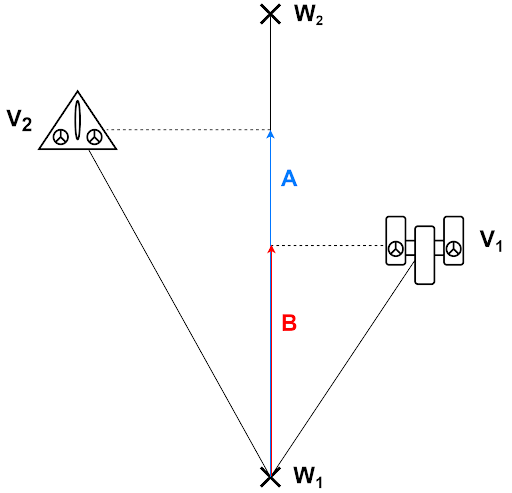
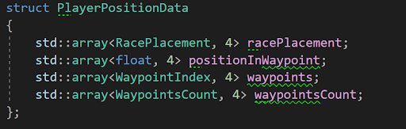
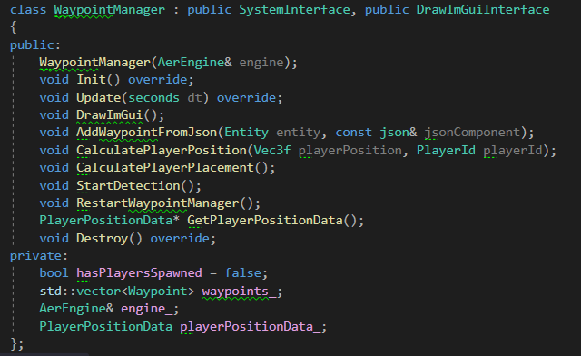

Context
We developed a video game project during our third year of Bachelor at SAE Institute of Geneva. Our objective was to create a racing game for Nintendo Switch using a custom C++ Game Engine. Our game "AerRacers" is a multiplayer pod racing game where players can go very fast but must control their speed to avoid crashing.
Player Positions in a Race
An important feature in a multiplayer racing game is knowing player positioning. There are several ways to get it - you could imagine systems using triggers or chunks - but I decided to use a waypoint system for these reasons:
- Uses simple maths (Dot product)
- Easier to implement in our engine
The Waypoint System
The waypoint system uses a waypoint map in which the player's position is calculated between waypoints. The waypoint manager keeps a target waypoint to calculate the player's position and updates the target by calculating the dot product between the vector Player-Waypoint and the vector Waypoint-NextWaypoint.

Waypoint Data
The waypoint structure contains:
- Position: Position of the waypoint
- Index: Index of the waypoint
- Next Waypoint Index: Index of the next waypoint
- Previous Waypoint Index: Index of the previous waypoint
- Length: Length between this waypoint and the next
- Normalized Next Vector: Normalized vector to the next waypoint
PlayerPositionData

I store every piece of information about player positions in a structure called "PlayerPositionData":
std::array<RacePlacement, 4> racePlacement- Keeps the players' placement in racestd::array<float, 4> positionInWaypoint- Keeps the dot product value for each shipstd::array<WaypointIndex, 4> waypoints- Keeps the current waypoint for each playerstd::array<WaypointsCount, 4> waypointsCount- Keeps the waypoint count for each player
The data is stored in arrays of size 4, corresponding to maximum players.
Waypoint Manager

To manage our waypoints, I created a waypoint manager with these key functions:
AddWaypointFromJson()- Called when loading the scene to get waypoints from JSONCalculatePlayerPosition()- Calculates all waypoint position elementsCalculatePlayerPlacement()- Calculates player placement using position dataStartDetection()- Starts waypoint detection and gets player dataRestartWaypointManager()- Restarts manager when returning to main menu
Creating the Waypoints
Before updating player positions, I had to create and store waypoints:
- Place waypoints on the Unity map
- Export waypoints with Unity Scene Exporter tool
- Import waypoints with Neko Scene Importer tool
- Place waypoints in the Waypoint Manager array
- Update the waypoint system
Updating PlayerPositionData
To update player position data, we go through these steps:
- Calculate the vector between ship position and waypoint for each ship
- Calculate the dot product between this vector and the waypoint's normalized next vector
- Check the dot product value of each ship
- Store the value in PlayerPositionData
- CalculatePlayerPlacement: Check if players have won and compare values to create placement
Special Situations
Checking if the Dot is Negative
At first, when the dot product was negative, I set the target waypoint to the previous one. The problem was that in some situations, the dot could be negative while also higher than the previous waypoint length, causing waypoint changes every frame. To solve this, I added a check when negative to verify if the dot product was higher than the previous waypoint length.
Multiple Paths
Another situation was when the game had multiple paths. I created a boolean to check if the player had multiple next waypoints, then checked both waypoints. I also added a check to see which waypoint the player was nearest to. In the end, we decided not to implement multiple paths since it wasn't necessary for our map.
Problems Encountered
Scene Exportation
One of the main problems was that it was my first time working on the Neko Engine. The most complicated part was exporting waypoints from Unity and loading them correctly. I had to look at colleagues' code, which would've been easier if I was more curious during development. For example, the x-axis was inverted in Neko Engine, and I lost time trying to fix my system when it was actually an export issue. I solved this by asking precise questions about the problems I met.
What I Learned
Personal Skills
I was sure it would be much harder to code in C++, but switching between C# and C++ wasn't very hard. I learned that I liked creating systems more than programming gameplay features, because it's easier to know what you're doing when you don't depend too much on other people's code.